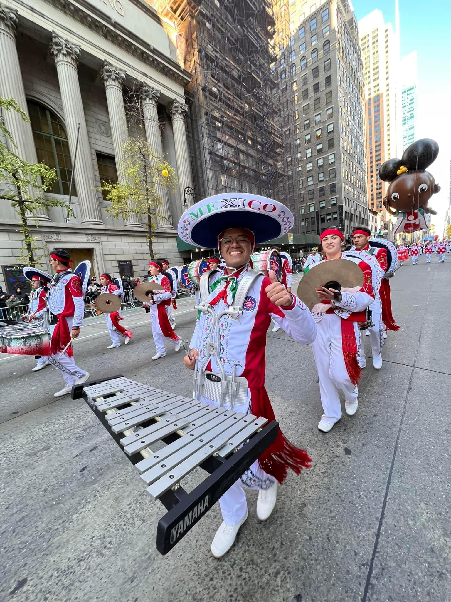

Mi Trayectoria en Delfines Marching Band
Etapa Pre-Rusia 2018
Entré a la DMB un 26 de agosto del 2017 y directamente pasé a formar parte de la sección de xilófonos. Durante el primer año tuve bastante aprendizaje y crecimiento musical, participando en mis primeros shows. La sorpresa saltaba cuando con menos de un año de experiencia, tendría la responsabilidad de ser el único integrante de mi instrumento en viajar al otro lado del mundo, para representar a México en la Gira Internacional número 10 de Delfines, en el International Military Tattoo "Spasskaya Tower", en la Plaza Roja de Moscú.
Primera Gira Internacional: Rusia 2018
Llegó el 20 de agosto de 2018, y con él la primera vez que viajaría al extranjero. En Rusia aprendí demasiado sobre como cuidarme ante un panorama completamente distinto, pude conocer personas de otros países con los que compartimos nuestras culturas, y me convertí en solista durante tres semanas. Sin duda, esta experiencia es lo que me dió la confianza de crecer y ser quien soy ahora.
Líder de Sección

El 1 de diciembre de 2018, meses después de Rusia, me nombraron líder de sección y sería un momento que cambió mi vida. A partir de ese momento, tuve la responsabilidad de dirigir a un grupo de músicos para alcanzar la excelencia musical y en todos los aspectos. Hasta la fecha he recibido a 11 nuevos integrantes a la sección, y mi objetivo y misión para seguir en Delfines es apoyar a estas nuevas generaciones a crecer y aprender para que en algún momento de sus vidad lleguen a vivir y apasionarse por esto de la misma forma que yo.
Macy's Thanksgiving Day Parade 2022
En noviembre de 2022 llegó mi segunda gira internacional, participando en el tradicional desfile de acción de gracias en Nueva York. En esta ocasión tuvimos oportunidad de dar un show en el mismo escenario donde estuvieron (ese mismo día) figuras como Jimmy Fallon, Mariah Carey, Paula Abdul, Big Time Rush y los espectaculares de Broadway "The Lion King" y "Funny Girl".
MusikParade 2024
A inicios de este año llegó mi tercera gira internacional cuando tuvimos la oportunidad de participar en el tour musical más importante de ALemania y de Europa, el MusikParade; donde visitamos las ciudades de Trier, Stuttgart, Saarbrücken, Kempten, Weztlar, Münster y Colonia. Esta gira fue diferente a las demás ya que al ser de los integrantes con más experiencia, pude disfrutar de mi pasión que es la música y además apoyar a los menos experimentados a que su viaje fuera tan bueno como fuera posible.
Xilófonos DMB
La sección de Xilófonos DMB en la actualidad atraviesa el momento con el mayor número de integrantes de su historia, con siete. Mi trabajo es liderar a esta sección para explotar sus habilidades y ser mejores cada día.
Delfines Marching Band
Delfines Marching Band es una banda de música fundada en 1999 y establecida en la Escuela Secundaria General 5 "Manuel R. Gutiérrez" de Xalapa, Veracruz. Durante sus 25 años de trayectoria, ha ganado dos veces concursos nacionales de bandas y participado en eventos acompañando a artistas como Natalia Lafourcade, Alex Lora y Ricky Martin. Además, son 12 las veces que han representado a México en escenarios de Europa y Estados Unidos, siendo ganadores de diversos premios en festivales como:
- Guilanova, Italia.
- Mundial de Bandas en Kerkrade, Países Bajos.
- Spasskaya Tower Festival, Rusia.
- Jubileo de la Reina Isabel II, 2012.
Mis Presentaciones Internacionales en vídeo
Moscú, Rusia. 2018.
Festival Internacional de Bandas Militares "Spasskaya Tower" 2018...
Nueva York, EUA. 2022.
Macy's Thanksgiving Day Parade 2022....